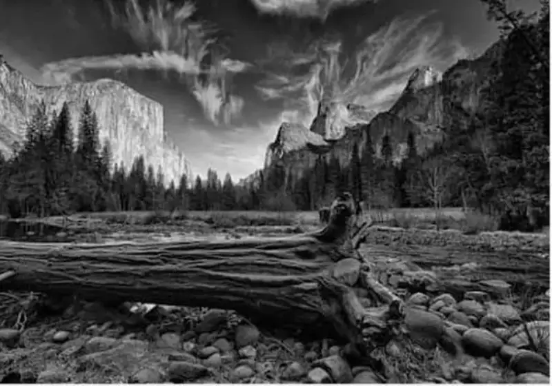
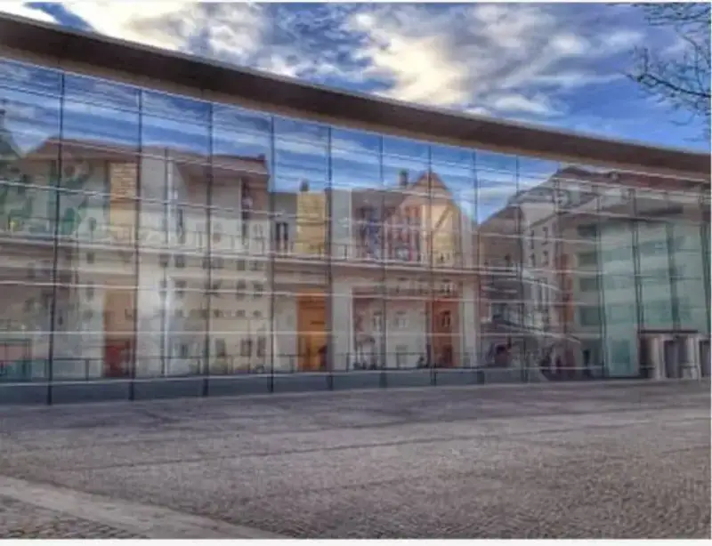
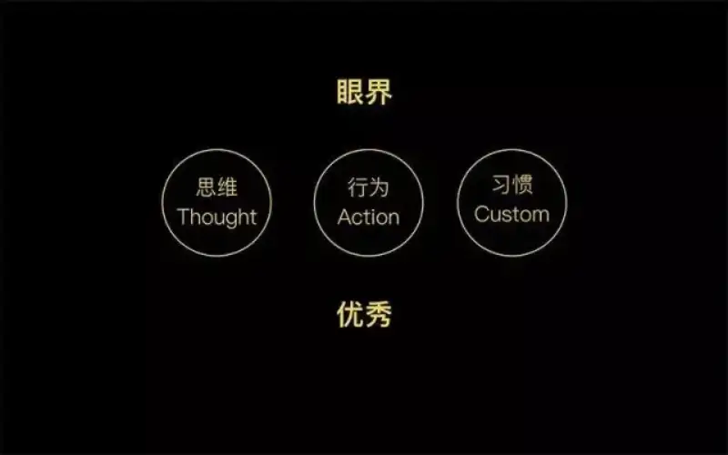
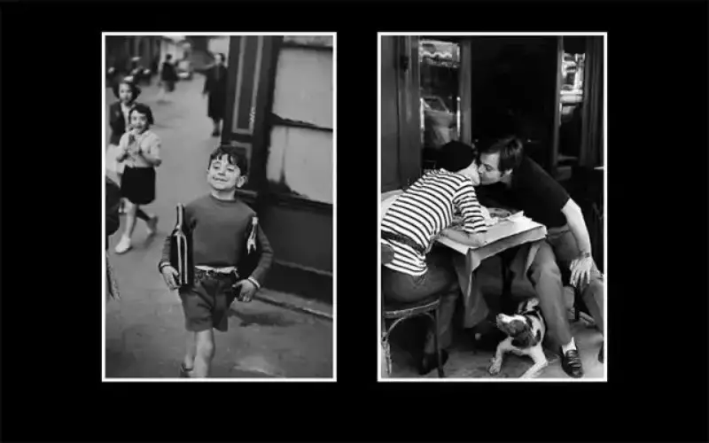
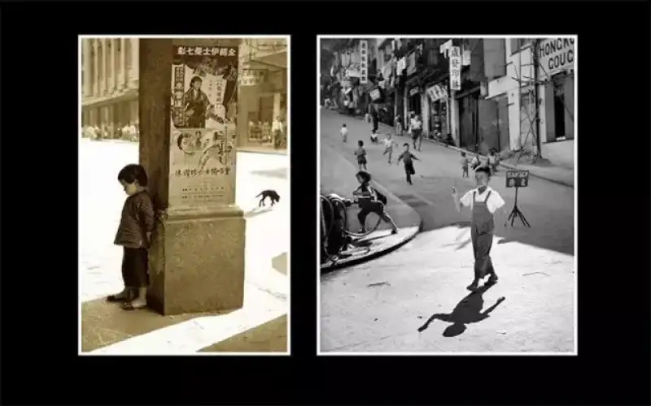
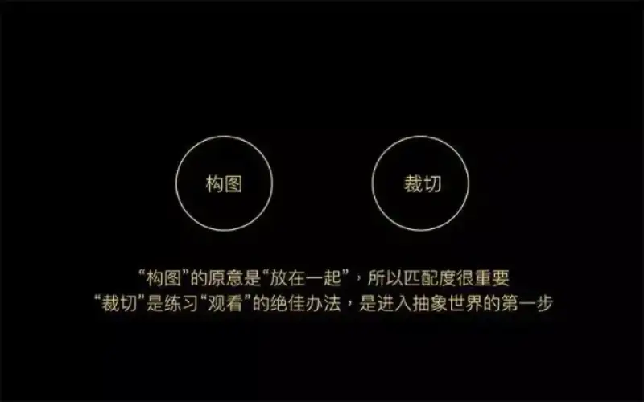
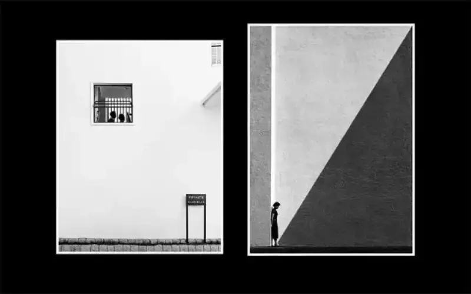
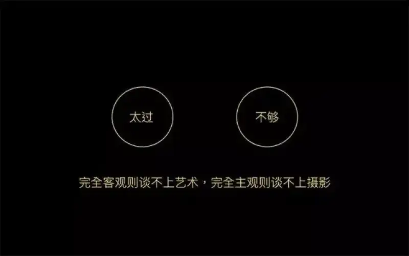
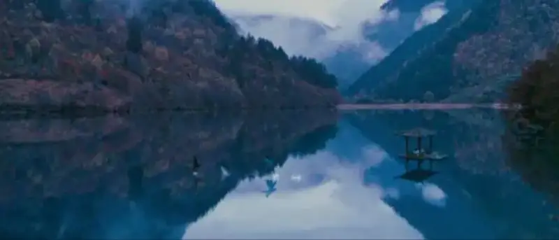
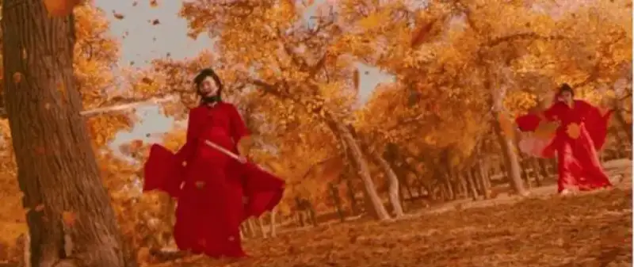

Published: 2023-02-18
Original link: https://www.cnphotos.net/academy/show-115.html
The hardest problem a photographer faces is: taste and range of vision.
Technique can improve, and experience can build up,
but only when you cross the threshold of taste,
do you truly enter photography.
And your range of vision is the origin point,
which sets the height your photos can reach.

Photographers must raise their taste and range of vision through study,
so here I share some experience.
Looking is a skill you must practice.
When we truly learn to look,
almost anything can be the subject of a good photo.
But if we only shoot what our eyes see,
that is not photography.
(1) Photography is thinking,
and you must learn to look to get good photos.
In truth, photography is this process:
choose a subject by idea, let thinking guide looking and organizing,
and use craft as support, to complete a form on the page.
Without doubt, looking is the expression of thought,
and the most important step in photography.
For most photos,
the subject can be soft, and craft need not shine,
but if you cannot learn to look,
you cannot organize the frame well,
and with mistakes everywhere, how can you call it photography?

Thinking guides looking, and this means:
to choose and organize all visual elements,
with awareness, choice, purpose, and method.
This needs both an understanding of the outside world,
for example, when you shoot a couple,
you should know something about love
and the state between people who love each other.
It also needs a deep grasp of photography itself,
that is, the general rules of turning things into a flat visual image.

Humanistic documentary shows the best kind of looking.
When you shoot, there is no talk, no direction,
no preset, and the content is wide open.
This kind of shooting needs strong thinking.
Here, thinking is very broad: cultural,
social, historical, and artistic, and none can be left out.
I suggest you study fine humanistic documentary work,
such as the well-known Bresson, Ruan Yizhong, and Fan Ho.
By analyzing and reading their work,
learn their way of thinking with images.

Work by Bresson

Work by Fan Ho
Photography is a serious thing.
Today we want fast results,
and digital gives us a no-cost way to shoot,
so we are unwilling to wait and think,
unwilling to spend a little more time
to catch the best moment,
and so it is hard to make a refined photo.
We should learn the way masters think with images,
learn to wait, and judge a person vivid emotional moment.

(2) Composition should become instinct,
so that you can make intentional photos.
We find order in chaos, make choices,
and organize the frame, until we pull beauty out of the real world.
On taste, besides studying fine work,
a very important point is the traditional basics of photography.
Composition is a core reason photography is photography.
Composition is the first step into the abstract world,
and abstraction is the road to beauty.
Composition matters so much, but the truth is,
many photographers have no sense of it,
and cannot even say what composition is for.
Studying and shooting documentary and humanistic work
is really about building a habit.
Whether you use a camera or a phone,
or even just look with your eyes, does not matter.
The key is to build the awareness and method of looking.

Work by Fan Ho: an outstanding composition
Composition takes the visual elements the photographer wants to show,
and organizes them in a certain order,
instead of simply copying everything you see.
We need to pull one focus out of the view before us.

If you treat photography as mere recording,
it becomes a tool.
If you treat it as mere expression,
it becomes a castle in the air,
in other words, it has no ground under it.
Advice: look and learn
1. First, look
The fastest way to raise your taste is to watch films.
I think film is the highest gathering of human taste so far.
A good film brings together the work of many artists.
It includes good cinematography, good story,
good costumes, good music, good lighting,
good actors, and more, before you get a good work.
How should we watch films? If you want to break through in photography,
do not just follow the plot next time.
Watch for these points:
1. Watch composition
2. Watch color pairing
3. Watch mood
4. Watch camera movement
We can study the work of one Chinese director, the master Zhang Yimou
We do not judge how good a director he is,
but when it comes to taste and how good the frame looks,
Teacher Zhang Yimou is very skilled.

The whole frame uses the golden section, very balanced,
and the colors lower saturation afterward,
so the frame does not look cluttered.

Ejina Banner became famous because of Zhang Yimou.
The tilted composition gives the frame more motion,
and the red and yellow pairing makes it vivid and intense.
So sometimes composition need not be steady and safe,
but can be adjusted to suit the frame.
A classic golden-section composition,
and low-saturation colors give it a strong wuxia feel.
There are many more good films like these,
such as Hugo and The Grand Budapest Hotel.
You must learn to watch more films and look at more photos.
Then imitate, and your taste will rise as fast as possible.
2. Then, learn
There is not much to say. On the road of photography,
a reliable teacher with a sound method matters a lot.
If you have the budget and the time, spend some money,
and a teacher who shoots with you will make you progress faster.
There is a good saying:
all successful products are the result of understanding human nature.
It is the same for us.
Your best work should be
your own interpretation of beauty.